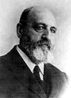
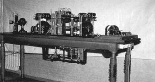

Der Spanier Leonardo Torres y Quevedo baut schon vor 1900 Maschinen, die komplizierte mathematische Gleichungen lösen konnten. Um 1900 entwickelt er eine Fernsteuerung für Maschinen, genannt "Telekino". 1906 führt er vor, wie ein Boot durch "Telekino" ferngelenkt werden kann. 1900 stellte der Däne Valdemar Poulsen auf der Pariser Weltausstellung sein "Telegraphon" vor, das erste Gerät für magnetische Schallaufzeichnung. Dort wurde es auch dem greisen Kaiser Franz-Joseph von Österreich vorgeführt, der sich auf einer erhalten gebliebenen Aufnahme sehr lobend über den Apparat ausgesprochen hat. Ein 1 mm dicker Stahldraht wurde an einem Tonkopf vorbeigeführt. Elektromagnetische Impulse, z.B. erzeugt mit Hilfe eines Mikrofons, wurden auf dem Draht gespeichert und konnten nachher wiedergegeben werden.